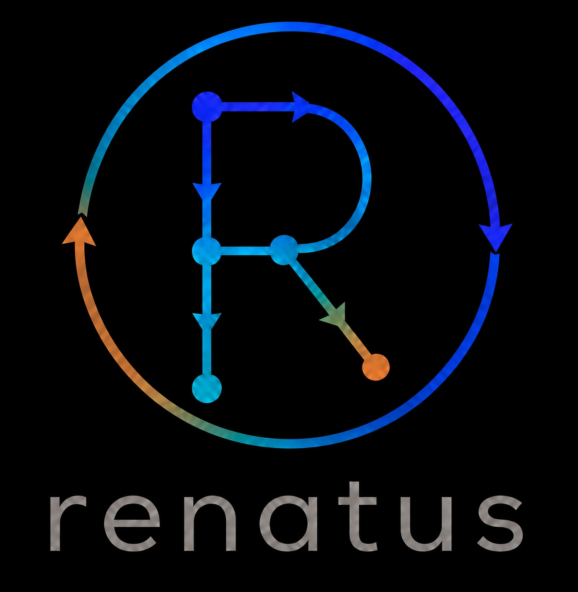

Documentation renatus

renatus signifie renaitre. On y construit des datasets sur un flux déclaratif : chaque table ou vue peut être recréée parce que son data lineage est connu, exprimé en YAML, et configurable aussi via le GUI graphique. Le même moteur sert le CLI, l’API HTTP et l’interface web.
- CORE.md — types d’étapes, paramètres, lineage
- CLI.md — commandes terminal
- API.md — endpoints REST
- GUI.md — GUI web
- ARCHITECTURE.md — couches techniques
- Cette page — lecture unique + diagrammes UML
1. Core (pipeline)
Package renatus.pipeline. Charge un ou plusieurs fichiers
YAML, ouvre DuckDB, exécute les étapes en respectant requires.
Hiérarchie OOP : Step ABC + factory (create_step).
Le répertoire projet (chemins relatifs des fichiers) est le parent du
dossier pipeline. Formats dataframe : csv, tsv, txt, parquet, json,
xlsx, xls. Propriété unifiée script (SQL ou Python ; legacy sql migré).
Types autorisés
dataframe, table, view,
execute / execute_sql,
execute_python, execute_shell,
iterate, zone,
allzone, backzone, forzone,
bidzone (auto-zones logiques F0128).
Fichier monocomposant : stem = id (F0101).
dataframe
| Paramètre | Statut | Rôle |
|---|---|---|
type | obligatoire | dataframe |
file | obligatoire | Chemin source (ex. input/sales.csv) |
mode | optionnel | create_if_not_exists (défaut) / create_or_replace |
label, name | optionnel | Affichage / relation physique |
table / view
| Paramètre | Statut | Rôle |
|---|---|---|
type | obligatoire | table ou view |
script | obligatoire | SELECT (alias legacy sql) |
mode | optionnel | create_if_not_exists / create_or_replace |
requires | optionnel | Ids d’étapes à matérialiser avant |
name | optionnel | Nom relation SQL (sinon id) |
execute / execute_python / execute_shell
| Type | Essentiel |
|---|---|
execute / execute_sql | script SQL, requires? |
execute_python | script Python, venv?, requires? |
execute_shell | script shell, requires? |
iterate
| Paramètre | Statut | Rôle |
|---|---|---|
scenarios | obligatoire | Table des scénarios |
step_view | obligatoire | Vue temporaire 1 ligne / tour |
target | obligatoire | Étape rejouée |
order_by, execution | optionnel | Ordre / parallel |
zone
Composant organisationnel (onglet Flux). Membership via
objects (dict d’ids) union fichiers du dossier FS.
workers (auto|queue|N), renatus_mode
(required_for_leaves|root_to_leaves). Vue calculée GUI all :
tous les composants hors type zone / auto-zone.
auto-zones (F0128)
Vues logiques sous flow/auto/ (définition YAML seule, membership recalculé) :
| Type | Id | Membership |
|---|---|---|
allzone | allzone | Composants de main hors zones |
backzone | bac_{object} | Requires récursifs |
forzone | for_{object} | Required_by récursifs |
bidzone | bid_{object} | Amont + aval |
Config lecture seule. Bouton Convertir en zone → zone physique + copies YAML.
API Python
from renatus.pipeline import ConnectionPipeline
cp = ConnectionPipeline("main.duckdb", "flow/")
try:
cp.process_with_requires("t_eu")
cp.p_table_view("v_products")
cp.p_iteration("i_run")
finally:
cp.close()2. CLI
Entrypoints renatus / renatus-cli. Oneshot ou REPL.
renatus main.duckdb flow/
renatus main.duckdb flow/ p_table_view v_sales
renatus main.duckdb flow/ --read-only table_view t_sales| Commande | Rôle |
|---|---|
p_table_view NAME | Lineage + affichage |
table_view NAME | Lecture sans lineage |
process_with_requires NAME | Process + requires |
p_iteration NAME | Itération |
3. API HTTP
renatus-api main.duckdb flow/ --host 127.0.0.1 --port 8000| Méthode | Chemin | Rôle |
|---|---|---|
| GET | /health | État |
| GET | /pipeline | Liste des étapes |
| POST | /p_table_view/{name} | Lineage + rows |
| POST | /process_with_requires/{name} | Build + requires |
| POST | /p_iteration/{name} | Itération |
4. GUI
renatus-gui main.duckdb flow/
renatus-gui mon.renatus.yamlZones de l’interface
| Zone | Rôle |
|---|---|
| Outils | Palette régions Datasets / Execute / Flow / Auto |
| Flux | Graphe requires ; select toutes zones + auto + all ; zoom ; lineage gris ; import |
| Config | View + crayon ; Objects / Requires ; auto-zones RO + Convertir |
| View / Track | Aperçu paginé (3–100 l/page) ; process Output/Error ; Track par composant |
API GUI (extrait)
| Méthode | Chemin | Rôle |
|---|---|---|
| GET | /gui/graph?tab=… | Nœuds / arêtes (tab all = hors zones) |
| GET/PUT | /gui/step/{id} | Config (objects effectifs zone/auto) |
| POST | /gui/auto-zone | Créer auto-zone |
| POST | /gui/auto-zone/{id}/convert | Auto → zone physique |
| GET | /gui/preview/{id}?limit=&page= | Aperçu paginé dataset |
| POST | /gui/steps | Créer |
| DELETE | /gui/step/{id} | Supprimer |
| POST | /gui/build/{id} | Build / zone_build |
| POST | /gui/import/flow | Importer YAML ou dossier |
| POST | /gui/upload | Upload (relative_path pour arbo) |
5. Diagrammes UML — Backend
Classes métiers Python sous src/renatus/. Attributs d’instance
et ClassVar principaux. Les méthodes sont documentées dans le code ;
les diagrammes privilégient état (attributs) et
héritage.
5.1 Hiérarchie Step (pipeline.steps)
classDiagram
direction TB
class Step {
+ClassVar type
+ClassVar ALLOWED_CONFIG_KEYS
+str id
+dict config
+str label
+list requires
}
class RelationStep {
+ClassVar DEFAULT_MODE
+str physical_name
}
class DataframeStep {
+ClassVar type = dataframe
}
class TableStep {
+ClassVar type = table
}
class ViewStep {
+ClassVar type = view
}
class ControlStep
class IterationStep {
+ClassVar type = iterate
}
class OrgStep
class ZoneStep {
+ClassVar type = zone
+dict objects
}
class SqlActionStep
class ExecuteStep {
+ClassVar type = execute_sql
}
class PythonActionStep
class ExecutePythonStep {
+ClassVar type = execute_python
}
class ShellActionStep
class ExecuteShellStep {
+ClassVar type = execute_shell
}
class StepFactory {
+dict registry
}
Step <|-- RelationStep
RelationStep <|-- DataframeStep
RelationStep <|-- TableStep
RelationStep <|-- ViewStep
Step <|-- ControlStep
ControlStep <|-- IterationStep
Step <|-- OrgStep
OrgStep <|-- ZoneStep
Step <|-- SqlActionStep
SqlActionStep <|-- ExecuteStep
Step <|-- PythonActionStep
PythonActionStep <|-- ExecutePythonStep
Step <|-- ShellActionStep
ShellActionStep <|-- ExecuteShellStep
StepFactory ..> Step : create()
5.2 Moteur pipeline & projet
classDiagram
direction TB
class Paths {
+Path root
+Path data
+Path files
+Path input
+Path output
+Path duckdb
+Path duckdb_main
+Path duckdb_workers
+Path main_db
+Path pipeline
+Path models
+Path doc
+Path src
}
class PipelineFactory {
+Paths paths
}
class ConnectionUtils {
+str db_path
+DuckDBPyConnection con
}
class ConnectionPipeline {
+ClassVar RESERVED_KEYS
+Path pipeline_path
+dict pipeline
+DependencyTree tree
}
class DependencyTree {
+dict pipeline
}
class ParallelismConfig {
+int bucket_count
+int max_workers
+int reserved_cpus
+int duckdb_threads_per_worker
}
class ParallelIterationManager {
+ConnectionPipeline shared_cp
+str iteration_name
+dict config
+ParallelismConfig parallelism
+str result_table
+str pipeline_hash
+str source_hash
}
class RenatusProject {
+str name
+str db_path
+str pipeline_path
+bool read_only
+int version
+str project_file
+dict extra
}
class ProjectGit {
+Path root
}
class PendingBranch {
+str name
+int ahead
+str last_commit
+str last_date
}
ConnectionUtils <|-- ConnectionPipeline
ConnectionPipeline --> DependencyTree : tree
PipelineFactory --> Paths : paths
PipelineFactory ..> ConnectionPipeline : open()
ParallelIterationManager --> ConnectionPipeline : shared_cp
ParallelIterationManager --> ParallelismConfig : parallelism
ProjectGit --> PendingBranch : list
RenatusProject ..> ProjectGit : workspace git
5.3 API, GUI service, CLI
classDiagram
direction TB
class RenatusService {
+str db_path
+str pipeline_path
+str pipelines_dir
+bool read_only
+RLock _lock
+ConnectionPipeline _connection
}
class RelationSerializer {
+ClassVar DEFAULT_LIMIT
+ClassVar MAX_LIMIT
+ClassVar DEFAULT_MAX_ROWS
}
class RenatusApiRuntime {
+str db_path
+str pipelines_dir
+str pipeline_path
+bool read_only
+int max_rows
+RenatusService _service
}
class RenatusApiApp {
+RenatusApiRuntime runtime
+str title
+str version
+FastAPI _app
}
class HealthResponse {
+bool ok
+str status
+str db_path
+str pipeline_path
+str pipelines_dir
+bool read_only
+int step_count
}
class PipelineStepInfo {
+str name
+str type
+list requires
+str mode
}
class RelationDataResponse {
+bool ok
+str name
+list columns
+list rows
+int row_count
+bool truncated
+int limit
}
class GuiService {
+RLock _lock
+RenatusService _api
+YamlStepStore _store
+int _max_rows
+bool _read_only
+str _project_file
+str _project_name
+str _work_branch
+str _active_tab
+list _open_tabs
+dict _renatus_times
}
class YamlStepStore {
+ClassVar ROOT_TAB
+ClassVar ALL_TAB
+Path pipeline_path
+dict _origins
+str active_tab
}
class GraphOps {
+GuiService gui
}
class GuiApp {
+GuiService gui
+str title
+str version
+FastAPI _app
}
class GraphNode {
+str id
+str type
+str mode
+str file_origin
}
class GraphEdge {
+str from_
+str to
}
class GuiStepResponse {
+bool ok
+str name
+dict config
+str file_origin
}
class GuiBuildResponse {
+bool ok
+str name
+str action
+list columns
+list rows
+int row_count
+bool truncated
+bool has_result
+int limit
+str message
}
class RenatusCli {
+ClassVar PROMPT
+str db_path
+str pipeline_path
+list command_tokens
+bool read_only
+ResultPrinter _printer
+ConnectionPipeline _connection
+CommandRunner _runner
}
class CommandRunner {
+ClassVar HELP_TEXT
+ConnectionPipeline _connection
}
class CommandResult {
+bool ok
+Any relation
+str message
+bool quit
}
class ResultPrinter {
+ClassVar DEFAULT_MAX_ROWS
+TextIO _out
+TextIO _err
+int max_rows
}
RenatusApiRuntime --> RenatusService : _service
RenatusApiApp --> RenatusApiRuntime : runtime
RenatusService --> RelationSerializer : serialize
RenatusService --> ConnectionPipeline : _connection
GuiService --> RenatusService : _api
GuiService --> YamlStepStore : _store
GraphOps --> GuiService : gui
GuiApp --> GuiService : gui
GraphOps ..> GraphNode
GraphOps ..> GraphEdge
RenatusCli --> CommandRunner : _runner
RenatusCli --> ResultPrinter : _printer
CommandRunner ..> CommandResult : run()
GuiConnectResponse,
GuiGraphResponse, GuiSaveResponse.
Corps de requête FastAPI (Pydantic) : ConnectBody,
StepPutBody, StepCreateBody,
ImportFlowBody, ProjectCreateBody, etc.
dans renatus.gui.app.
6. Diagrammes UML — Frontend
Modules ES sous src/renatus/gui/static/app/. Architecture
contrôleurs (UiController) + GuiState partagé +
registry des StepType (miroir frontend des types pipeline).
6.1 Application, état, API
classDiagram
direction TB
class GuiApp {
+GuiState state
+ApiClient api
+StepTypeRegistry stepTypes
+Toolbox toolbox
+GraphCanvas graph
+PipelineTabs tabs
+ConfigPanel config
+ProjectDialogs project
+ChangelogPanel changelogs
+DataViewPanel dataview
+bool _started
}
class GuiState {
+bool connected
+str selected
+object graph
+list allSteps
+list tools
+object workspace
+object pendingTool
+object drag
+bool syncing
+object yamlTimer
+str dataviewSource
+bool dataviewIsPrereq
+str processSubTab
+str projectMode
+object projectInspect
+str activeTab
+list tabs
+str bottomTab
+list changelogEntries
+str changelogCommit
+str changelogPath
+list changelogFiles
+object fieldSnapshots
+object layout
+object lastSelectedByTab
+str lastManipulatedZone
}
class ApiClient {
+object defaultHeaders
+number _toastTimer
}
class UiController {
+HTMLElement root
+bool mounted
}
class StepTypeRegistry {
+Map _types
}
GuiApp --> GuiState : state
GuiApp --> ApiClient : api
GuiApp --> StepTypeRegistry : stepTypes
GuiApp --> UiController : controllers
6.2 Contrôleurs UI
classDiagram
direction TB
class UiController {
+HTMLElement root
+bool mounted
}
class GraphCanvas {
}
class PipelineTabs {
}
class Toolbox {
}
class ConfigPanel {
}
class DataViewPanel {
}
class ChangelogPanel {
}
class ProjectDialogs {
}
UiController <|-- GraphCanvas
UiController <|-- PipelineTabs
UiController <|-- Toolbox
UiController <|-- ConfigPanel
UiController <|-- DataViewPanel
UiController <|-- ChangelogPanel
UiController <|-- ProjectDialogs
GraphCanvas—layoutNodes,renderGraph, croix delete F0106, vue tabPipelineTabs— select zones, onglet virtuelallToolbox— palette outils / création stepConfigPanel— select/save/build/delete, crayons, presentationDataViewPanel— table / process Output|ErrorChangelogPanel— timeline git, apply FFProjectDialogs— open/save/create projet
import-flow.js,
confirm-dialog.js, config/zone-objects.js,
config/requires.js, config/pencil.js, config/file-field.js.
6.3 StepTypes (miroir YAML côté form)
classDiagram
direction TB
class StepType {
+str type
}
class DataframeStepType
class TableStepType
class ViewStepType
class ExecuteStepType
class ExecutePythonStepType
class ExecuteShellStepType
class IterationStepType
class ZoneStepType
class StepTypeRegistry {
+Map _types
}
StepType <|-- DataframeStepType
StepType <|-- TableStepType
StepType <|-- ViewStepType
StepType <|-- ExecuteStepType
StepType <|-- ExecutePythonStepType
StepType <|-- ExecuteShellStepType
StepType <|-- IterationStepType
StepType <|-- ZoneStepType
StepTypeRegistry o-- StepType : register
*StepType implémente defaultConfig,
fieldVisibility, toConfig / fromConfig
pour synchroniser le formulaire Config avec le YAML.
ZoneStepType gère le champ objects (F0056/F0097/A0015).